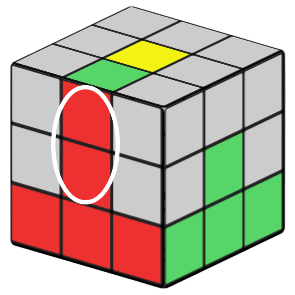
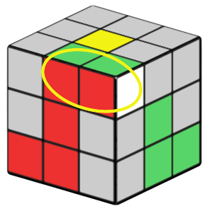

How to solve a Rubik's cube
This guide is designed for anyone to be able to pick up a 3x3 Rubik's cube and solve it in just 7 steps. You don't need to have any prior experience to use this guide.
Content to add here:
Mention that this section isn't needed but helps a ton
- What is an edge, corner, and center
- How to hold the cube
- What solving a cube is NOT (ex: doing math calculations)
- Grayed out pieces in the example images
- Terminology:
- Rotate vs turn vs twist
- Face and side
- Sticker
The first step in this guide is to solve a white cross. You can technically start with any color you want but this guide will start with white as it is the typical starting color.
This is what our goal is for this section:
For this entire guide we are going to be holding the white side facing down. (Meaning, if we put the cube onto a table, the white side would be the only one we can't see)
The most important thing to note is the other color on the edge matters. See the example pictures to the right.
As you can see in the first picture, one of the white cross pieces looks solved but the othercolor isn't in the correct spot. In the second picture you can see both colors match.
Here is one method of inserting the cross pieces into the right spot. The first step is to get the cross piece into the yellow layer with the white sticker facing upwards. (Being in the yellow layer means it is right next to the yellow center. See the picture below for an example)
Once our cross piece is in the yellow layer we can turn the yellow face until the other color on our edge piece matches the center piece below it.
Then we can turn the front of our cube 180 degrees to put it into the white layer.
This is the best way to put edge pieces in. Using the U face you can align the cross piece with its other color and then turn the front face to insert the cross piece.
Note: In all of the the images in this tutorial the side to the left will be the side that is facing us. In this case the red side is facing us.
This is one of the other possible cases to get. As you can see in the image below, the white sticker isn't facing up. This means we will have to do something slightly different.
First we will move the edge piece to the side like this:

Then we will move the right side down so the edge sticker matches the center color. In this case the sticker and center color is red.
Then we put the cross piece into its solved spot like this:
Because we did that then the other cross piece nearby got moved. In this case the other cross piece was the green one so we need to fix it like this:
Now that we have done that then we should have our red piece in place!
Another possible thing that can happen while solving the cross pieces is this. The piece can be in a weird spot and moving it will break another one of our cross pieces. This is one way we can deal with that.
First we will lift the piece up using the right side like this:
Then we will move it out of the way like this:
Then we will fix the cross piece that we broke during the first move like this:
As you can see we put the cross piece into the yellow layer and now we can solve it using one of the previous methods mentioned.
Now use the above methods to solve all 4 white cross pieces and your cube should look something like this. Don't worry if you are having a hard time with this step. This is probably the hardest step of the entire solving process to understand.
Our next step is to finish our first layer by putting in the corners. Much like the cross pieces the edge color does matter. Here's an example of one solved incorrectly.
As you can see in the first picture the corner is in the wrong spot. The edge colors don't match the cross pieces around it. This corner is correct though because the edge colors match the cross pieces around it.

Here's a couple of ways to put in the corners. The first is pretty simple and also the most common and it looks like this.
The first thing to notice about this is that the white sticker on the corner is facing sideways. This is what we want. If the sticker is facing upwards (meaning the white sticker is facing the same direction as the yellow center) then it is a little bit different and will be explained later in this step.

The first step we should do is to put the corner in the yellow layer and put it on top of where it belongs when it is solved. That looks something like this:

Now that the piece is on top of where it belongs then we are going to rotate the whole cube so the white sticker should be facing us. Once we have done that then we need to see which side of the front face our corner is on. In this case the corner is on the right side of our front face. Becase it is on the right side then we are going to move it to the left first like this:

Then we are going to lift up the side the corner started on. In this case it started on the right side so we are going to lift up the right face like this:

Then we are going to move our corner right next to the cross piece to ‘stick’ the white stickers together.

Then we are going to put both pieces back into the first layer like this.

This also works on the opposite side which looks like this.

Like in the previous example, we are going to put the corner over top of where it belongs when it is solved. And then turn whole cube so the white sticker is facing you.

Then we notice that this time the corner is on the left side of our front face. Just like last time we are going to move it the opposite way first, so we are going to move it to the right this time.

Then, like last time, we will lift the side that the corner started on like this:

Then we are going to move the piece back to the left to 'stick' the white stickers together.
Then we are going to put both the corner and the cross piece back down into their solved spots.

Your piece should now be solved like this.
This is the other type of case you can get. In this case we will start like normal where we put the corner on top of where it belongs when it is solved. In this case though the corner is facing upwards instead of sideways which means we are going to have to do this differently.
First we are going to lift the corner up and away from us like this:
Then we are going to move the corner out of the way. Because we lifted the edge on the right side of the cube we will move it to the left side. (If we lifted it on the left then we would instead move it to the right)
When we lifted our corner up then we also moved our cross piece so we need to fix our edge like this.
Now our edge is facing sideways and we can now solve the corners like we did in the prevous examples above.

If the corner is in the wrong slot like in this picture then we can take the corner out using this method.
First we are going to lift the corner up into the top layer like this:

Then we are going to move it away from the cross piece it was attached to.

Then because we lifted our cross piece up, we will fix our cross piece by moving it back down.
Now we can solve the corner using the other methods from before.
Using all of the methods here you should be able to solve all 4 of your white corners. Your cube should look something like this now.
Congrats! You now have one layer solved!
Now we are going to move on to solving the second layer. First we want to find a piece that needs to be put into the second layer. The easiest way to do this is to look on the top layer and find an edge piece that does not have yellow in it. We can ignore any corners and any edges with yellow on them for this step.
For this example we are going to use this piece. Notice which color is on top and which color is on the side.
We are first going to turn the top layer so the side color matches the center below it like this:
Notice how the edge color and the center color match. If they don't match then the piece will not solve to the correct spot. Also note what direction we want the piece to move. In this example we want it to move to the right side.
Because we want the piece to move to the right, we are going to move it the opposiste way first for this algorithm.
Then we are going to lift the corner on the right side. We lift the right side corner becuase that is the side the piece needs to go when it is solved.
Then we are going to move the edge piece back to where it started from.
Then we are going to put the corner back down.
Notice how it made a small block of pieces that match. This is a good indication that you are doing the algorithm correctly.
Next we are going to put this pair of pieces down into the "slot" it belongs in like this:
Notice here that when we put the pieces in it moved the other cross piece and corner into the wrong spot so we need to fix that. To fix it we are going to first hide our pair of pieces to the back like this:
Then we are going to move the cross piece back to where it is solved.
And finally we can fix the cross and pair on the right side again.
If you did all of the moves correctly then you should have the second layer edge piece solved!
The above example used a case where the piece needed to go to the right. This is an example of where the piece needs to go to the left.
We wont look at the whole algorithm here but it follows the same steps as the case above, just done from the left.
1. We first make sure the color on the edge piece matches the center color below it.
2. We
figure out which side the piece needs to go. We just decided it needs to go to the left side to be
solved so we are going to move it the opposite way first.
3. We will lift the corner on the
side the piece needs to go.
4. Move the edge piece back to where it started from.
5. Make
sure the pieces made a block known as a pair on the top. Then move the pair down to its solved
spot.
6. Hide the pair to the back.
7. Fix the cross edge we broke.
8. Bring the
pair back that we hid.
This is the other possible case we can get. The edge is in the correct spot but it is flipped over.
The easiest way to solve this is to put another edge into the slot and then solve the piece again. In this case we will put the circled edge into the slot using the method above.
Once we do that then the edge piece ends up somewhere in the top layer like this. We then can solve the piece like we normally would.
Using the above methods you should be able to solve all of the edge pieces in the second layer. Your cube should now look something like this:
Before we move on to the next step we need to learn how to read cubing notation. The algorithms used for the rest of the steps use this notation
For this step we are going to make a cross out of the yellow pieces on top while keeping the rest of our cube solved.
This step has 4 possible cases.
The first is the bar case and it looks like this
To solve the cross with this case make sure the bar is set horizontally like in the picture above. If the bar is turned vertically then the algorithm won't work.
F R U R’ U’ F’
The second case is the L case and it looks like this
To solve this turn the L shaped part to the back left just like in the picture and then do the last algorithm twice in a row.
The third case is the dot case and looks like this
To do this case just do the algorithm once and it will give you one of cases we talked about previously. Then solve that case like normal.
The 4th possible case is the best one. It is just solved.
Your cube should look like this now
The next step is going to be moving the yellow cross edges into their solved positions.
As you can see from this picture the yellow cross is solved but the edge colors are not solved.
This algorithm will swap the 2 edges marked in the picture below.
Using this algorithm we can solve the 4 edges. To find which edges are already solved turn the U face until at least 2 edges are solved and then use this algorithm to swap edges until they are all solved.
R U2 R’ U’ R U’ R’ (U')

Your cube should look something like this
Next we are going to move our yellow corner pieces around until they are in the correct spot. They will be twisted still but that is on purpose.
Here's an example of a piece that is in the correct spot but still twisted and one that is in the wrong spot.
In the first you can see that the color of the corner piece matches the sides around it which means that it is in the correct spot on the cube. The second corners colors do not match the sides around it so we'll have to move it.
This algorithm will move 3 corners around. To use this algorithm put a solved Corner piece in the bottom right like in the picture below.
The bottom right corner is the only one that won't move in this step. This algorithm will move the other 3 corners around. Keep moving the corners around until they are all in the correct spot.
L’ U R U’ L U R’ U'
Your cube should now look something like this although yours might be slightly different.
The final step is to twist the corners that we just moved around. This is the step most people will mess up the most but just follow the moves EXACTLY and it will work just fine. For this step DO NOT rotate the cube around. The way the cube is facing matters for this step.
To start twist the U face so that an unsolved corner is in the bottom right position like this
Then do this algorithm over and over until that corner is solved
R’ D’ R D
Once that corner is solve it will look like the rest of the cube is messed up like shown in the picture down below
This is fine. Just don't rotate the cube around it it will solve itself.
Next use only U moves to put another unsolved corner in the bottom right spot and use the algorithm over and over until that corner solves. Repeat for all the corners in the U face. Once the last corner is solved the rest of the cube should also be solved.
Congrats! You solved a rubik's cube.
For help on memorizing the algorithms, more visual forms of the algorithms, or an example solve see the extra tips page.